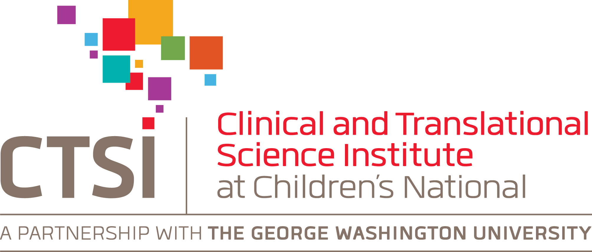

The Clinical and Translational Science Institute at Children's National (CTSI-CN) is a partnership between Children’s National Hospital and The George Washington University and recognizes the outstanding strengths in clinical and translational research that will be further enhanced.
The CTSI-CN offers unique resources in translating discovery to improved health. It provides highly integrated, cost-effective, investigator-focused resources designed to overcome research barriers, promote collaborative research, and provide research training with a special focus on children’s health. With an emphasis on health disparities and childhood antecedents to adult diseases, CTSI-CN builds upon its pediatric research strengths in areas such as rare diseases, asthma, and neuro-developmental disabilities to collaborate with a national network of 1,200 community health centers.
The mission of the CTSI-CN is to foster broad collaborative investigation that accelerates discovery and drives dialogue across the bench, bedside, and community continuum.
Built with Mobirise